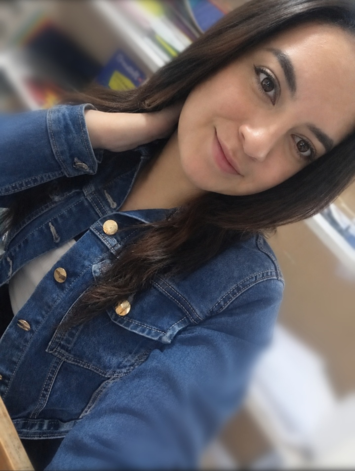

A veces me pongo a pensar en todo lo que hemos vivido juntos y me doy cuenta de que nuestra historia está llena de pequeños momentos que para mí significan muchísimo. Tu sonrisa, nuestras conversaciones, las veces que hemos reído por cualquier tontería, los momentos en los que simplemente estuvimos juntos sin necesitar nada más, cada abrazo, cada baile y cada detalle han ido formando recuerdos que guardo con muchísimo cariño. Y entre todos ellos, uno de los que más recuerdo es nuestro primer viaje a Baños, porque no fue solamente conocer un lugar nuevo, sino vivir una experiencia hermosa contigo. Recuerdo haber recorrido lugares juntos, reírnos, disfrutar de cada momento y también esas aventuras que vivimos haciendo rafting y canyoning. La emoción, los nervios, las risas y todo lo que compartimos en esas experiencias hicieron que ese viaje fuera todavía más especial. Creo que los lugares pueden ser bonitos, pero vivirlos contigo hace que se vuelvan inolvidables. ❤️
También están todos esos momentos que quizás parecen pequeños, pero que para mí tienen un valor enorme: cuando bailamos, cuando nos reímos por cualquier cosa, cuando hablamos de todo y de nada, cuando simplemente estamos juntos y disfrutamos de nuestra compañía. Y entre esos recuerdos hay uno que para mí tiene un significado muy especial: nuestros primeros anillos de amor. 💍❤️ Quizás para alguien más sean solamente unos anillos, pero para mí representan mucho más; representan una parte de nosotros, de lo que hemos vivido, del cariño que nos tenemos y de esa historia que poco a poco hemos ido construyendo. Cada vez que los veo pienso en nosotros, en nuestros momentos y en todo lo que significan esos pequeños detalles que hacemos por amor. Me gusta pensar que llevamos algo que nos recuerda nuestra historia y que, aunque sea algo pequeño, lleva dentro un sentimiento enorme.
También recuerdo tu cumpleaños y lo bonito que fue poder compartir contigo un día tan especial. Me gusta estar presente en esos momentos importantes para ti, verte sonreír, acompañarte y saber que puedo formar parte de tus recuerdos. Porque quiero que cuando mires atrás también encuentres momentos bonitos que vivimos juntos y que puedas recordarlos con una sonrisa. Gracias por cada momento que me has regalado, por cada sonrisa, cada abrazo, cada conversación, cada aventura, cada viaje y cada recuerdo que hemos construido. Gracias por dejarme conocerte, por compartir conmigo una parte de tu vida y por permitirme formar parte de la tuya. No sabes cuánto valoro todo lo que hemos vivido y cuánto cariño le tengo a nuestra historia, porque cada experiencia, desde las más sencillas hasta las más emocionantes, ha hecho que te quiera y te valore todavía más.
Y si algo tengo claro es que no quiero que todo esto se quede solamente en recuerdos, quiero seguir viviendo cosas contigo. Quiero que tengamos más viajes, más lugares por conocer, más bailes, más risas, más cumpleaños juntos, más fotografías, más abrazos y muchas más aventuras, incluso algunas que nos vuelvan a llenar de nervios como el rafting y el canyoning. Quiero seguir viendo cómo nuestra historia crece y se llena de nuevas experiencias, porque después de todo lo que hemos compartido siento que todavía nos quedan muchísimas páginas por escribir. No sé exactamente qué nos espera más adelante, pero sí sé que me hace feliz imaginar todo lo que todavía podemos vivir juntos. Nuestros anillos pueden ser pequeños, pero para mí llevan dentro algo enorme: nuestro cariño, nuestros recuerdos y una parte de nuestra historia. Y mientras los llevemos, quiero que cada vez que los mires recuerdes que hay alguien que te quiere muchísimo, que guarda cada momento contigo en su corazón y que se siente muy feliz de poder llamarte mi amor. Te quiero por quien eres, por cómo me haces sentir y por todo lo bonito que hemos construido juntos. Gracias por cada momento, por todo lo que hemos vivido, por todo lo que somos y por todo lo bonito que todavía nos falta por vivir. Te quiero muchísimo, mi amor. ❤️💍🌹
💖 Gracias por existir 💖
💖🌸✨ Con todo Cariño, Daniel 💖🌸✨
💖 PRESIÓNAME 💖